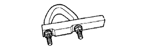
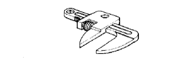

STEERING GEAR > DISASSEMBLY > Preparation

|  | 09612-00012 | Rack & Pinion Steering Rack Housing Stand |
|  | 09922-10010 | Variable Open Wrench |
| Caliper gauge | - |
| Paint | - |
| Pliers | - |
| Torque wrench | - |
| Vise | - |
 | 09017-1C110 | Union Nut Wrench 12mm | - |
| 09017-1C130 | Union Nut Wrench 17mm | - |
| 09017-1C140 | Union Nut Wrench 19mm | - |
 | 09025-00010 | Torque Wrench (30 kgf-cm) | - |